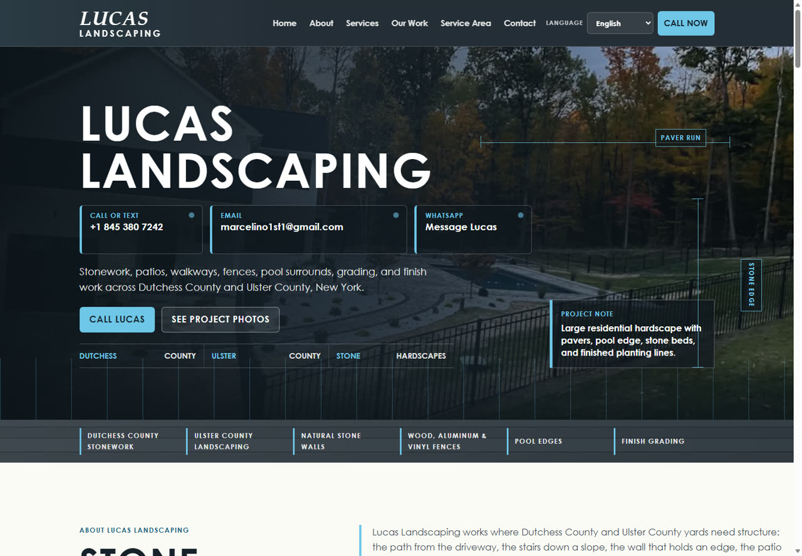

Web comercial bilingüe
Lucas Landscaping
Una web para presentar servicios de landscaping y facilitar consultas directas.

El reto
La empresa necesitaba explicar sus servicios, mostrar trabajos y atender a clientes en inglés y español.
La solución
Diseñé una página comercial con propuesta clara, servicios, trabajos visuales, zona de atención y llamadas a contacto.
Mi participación
Diseño y desarrollo responsive de la web comercial bilingüe.